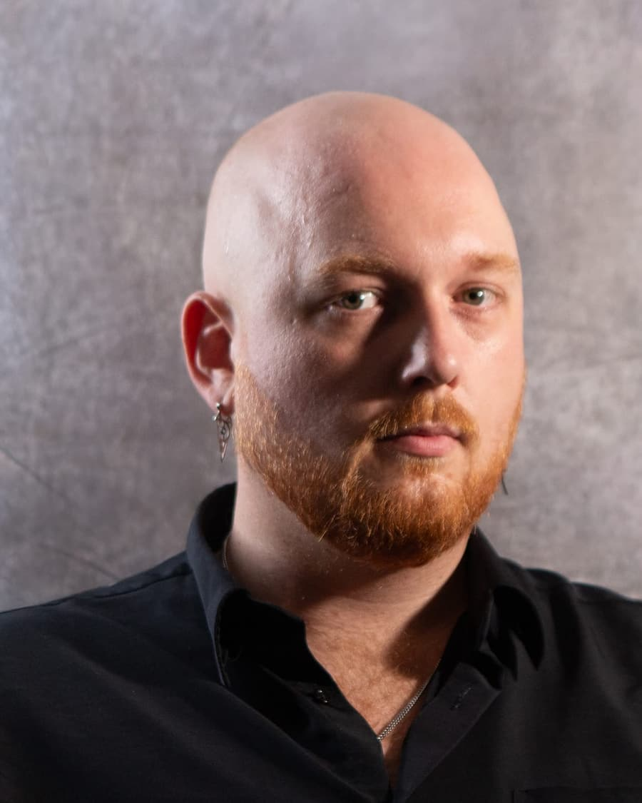
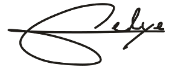

Editorial & commercial photographer · Medellín.
Guillaume Delye
I'm Guillaume Delye, a French photographer based in Medellín, Colombia. I shoot fashion, hospitality, and reportage for editorial and brand clients across Europe and Latin America.
Recent: commissioned work for A Stretta and the Feniks Festival, and event reportage for Blackout Colombia in Medellín, plus self-directed projects: the La Gaffe hospitality series in Corsica and spec editorial concepts. I shoot tight selects on set, deliver final files in 10–14 days, and bill in EUR or USD.
On assignment across Latin America, France, the Mediterranean, and where the brief takes us. Send a brief and I will reply within 48 hours.
